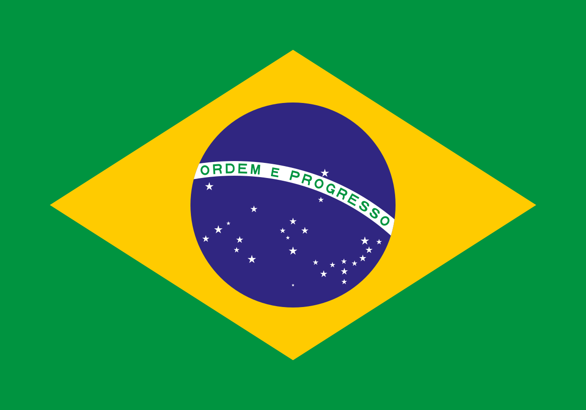
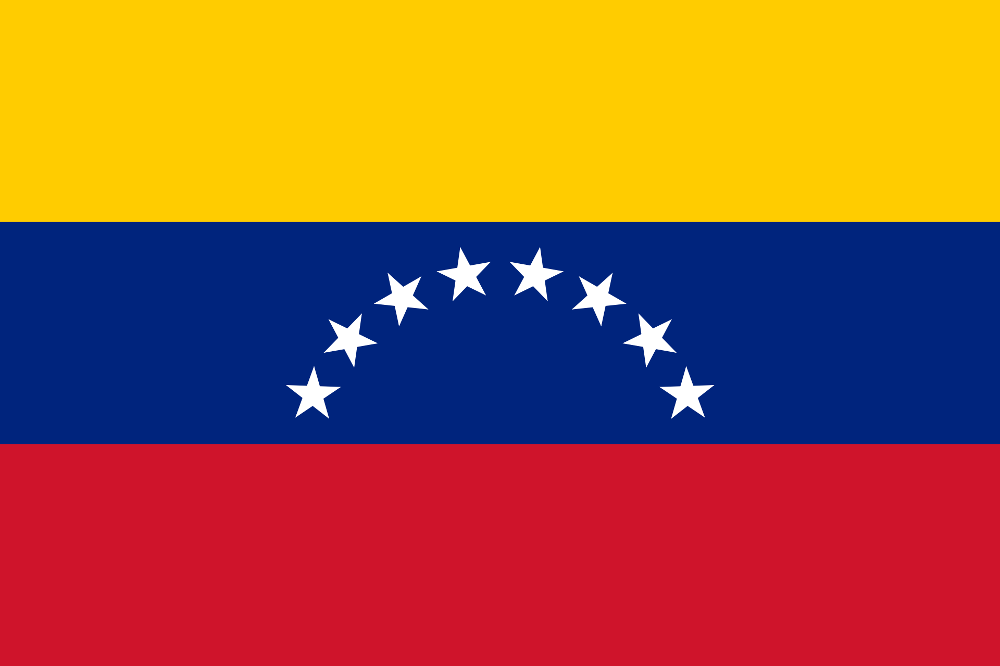
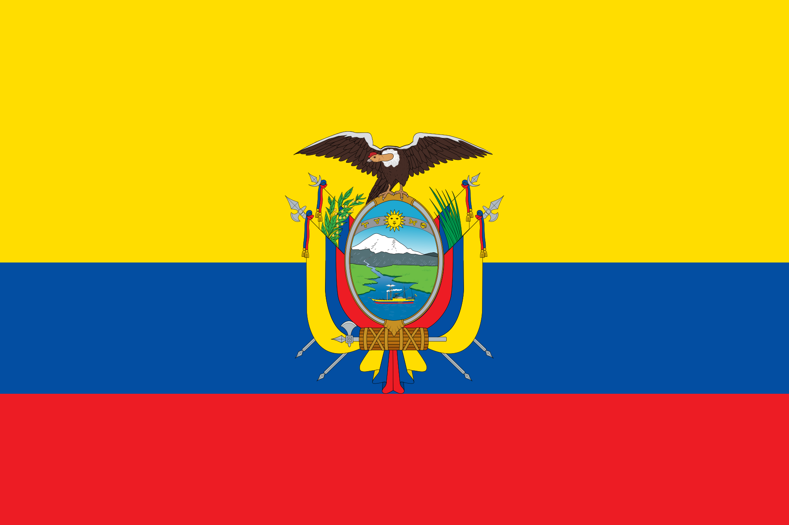
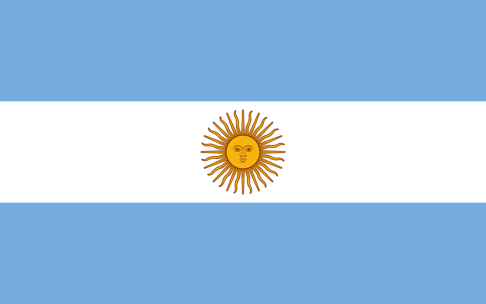
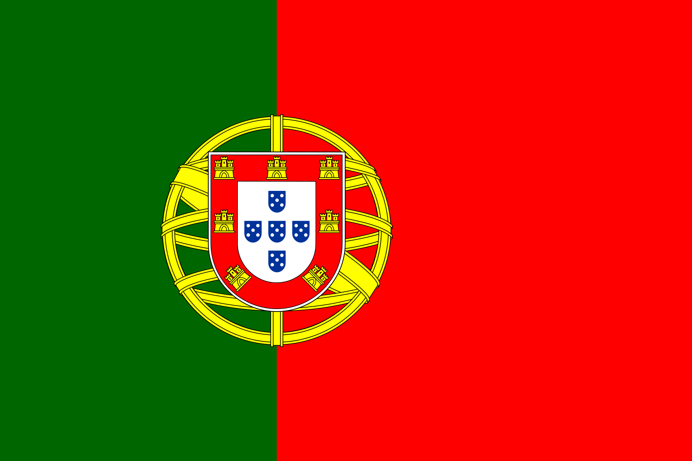
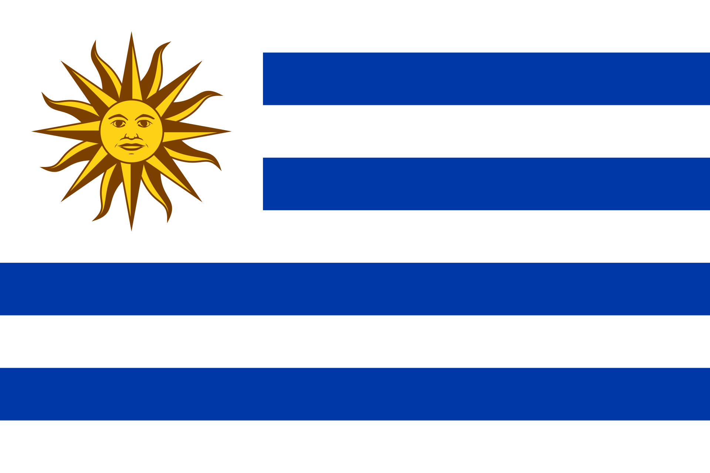

Elenco atual do São Paulo Futebol Clube
| N.º | Pos. | Nome | N.º | Pos. | Nome | N.º | Pos. | Nome |
|---|---|---|---|---|---|---|---|---|
| 2 | LD |  Igor Vinícius | 16 | V | Luiz Gustavo | 32 | Z |  Nahuel Ferraresi |
| 4 | Z | Diego Costa | 17 | A | André Silva | 33 | A | Erick |
| 5 | Z |  Robert Arboleda | 18 | M | Rodriguinho | 35 | Z | Sabino |
| 6 | LE | Welington | 21 | V |  Damián Bobadilla Damián Bobadilla |
36 | LE | Patryck |
| 7 | A | Lucas | 23 | G | Rafael | 39 | A | William |
| 8 | M |  Giuliano Galoppo | 25 | V | Alisson | 44 | Z | Matheus Belém |
| 9 | A | Jonathan Calleri | 27 | M | Wellington Rato | 46 | V | Negrucci |
| 10 | A | Luciano | 28 | Z | Alan Franco | 47 | A | Ferreira |
| 11 | M | Rodrigo Nestor | 29 | V | Pablo Maia | 50 | G | Young |
| 13 | LD | Rafinha | 30 | LD |  Moreira | 31 | A | Juan |
| 14 | LE | Patryck | 35 | Z | Sabino | 93 | G | Jandrei |
| 15 | M |  Michel Araújo | ||||||
| 37 | LE | Patryck | ||||||
| Técnico: Luis Zubeldía | ||||||||